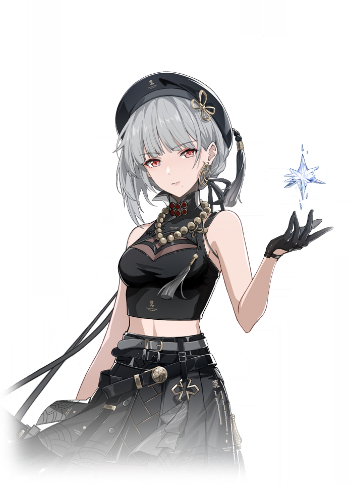

Wuthering Waves Resonator guide
Cartethyia build, teams, weapons, and Echoes
Aero carry with strong payoff when the team supports her Erosion mechanic.
Personal notes
Optional profile-aware info that keeps the main guide unchanged.
No profile connected on this browser yet.
Log in above to load an existing WaveKit profile, or use the team helper to mark your Resonators and weapons for Cartethyia.
Skill priority
Team compositions
 Main damageCartethyiaLeads the damage plan
Main damageCartethyiaLeads the damage plan Setup helperCiacconaSets up the damage dealer
Setup helperCiacconaSets up the damage dealer Support slotRoverCompletes the team
Support slotRoverCompletes the teamCiaccona handles the main setup while Rover completes the team. Ciaccona plus Aero Rover is Cartethyia's strongest low-sequence Erosion core. Chisa is a real specialist option at any sequence and can overtake Rover with Kumokiri; from R2, Cartethyia no longer relies on Rover for the extra stack limit. Shorekeeper and Verina are safer but lower-synergy alternatives, not direct replacements for Chisa.
Main damageCartethyiaLeads the damage planSetup helperCiacconaSets up the damage dealer Support slotChisaCompletes the team
Support slotChisaCompletes the teamCiaccona handles the main setup while Chisa completes the team. Ciaccona plus Aero Rover is Cartethyia's strongest low-sequence Erosion core. Chisa is a real specialist option at any sequence and can overtake Rover with Kumokiri; from R2, Cartethyia no longer relies on Rover for the extra stack limit. Shorekeeper and Verina are safer but lower-synergy alternatives, not direct replacements for Chisa.
Main damageCartethyiaLeads the damage planSetup helperCiacconaSets up the damage dealer Support slotShorekeeperCompletes the team
Support slotShorekeeperCompletes the teamCiaccona handles the main setup while Shorekeeper completes the team. Ciaccona plus Aero Rover is Cartethyia's strongest low-sequence Erosion core. Chisa is a real specialist option at any sequence and can overtake Rover with Kumokiri; from R2, Cartethyia no longer relies on Rover for the extra stack limit. Shorekeeper and Verina are safer but lower-synergy alternatives, not direct replacements for Chisa.
Main damageCartethyiaLeads the damage plan
Setup helperSanhuaSets up the damage dealerSupport slotRoverCompletes the teamSanhua handles the main setup while Rover completes the team. Ciaccona plus Aero Rover is Cartethyia's strongest low-sequence Erosion core. Chisa is a real specialist option at any sequence and can overtake Rover with Kumokiri; from R2, Cartethyia no longer relies on Rover for the extra stack limit. Shorekeeper and Verina are safer but lower-synergy alternatives, not direct replacements for Chisa.
New player reading guide
If you are only checking Cartethyia before selecting your Resonators, start with her sequence and Chisa's weapon. R0-R1 generally prefers Ciaccona and Aero Rover, but Chisa is already a valid specialist and can pull ahead with Kumokiri. From R2, Cartethyia supplies the extra stack limit herself. Shorekeeper remains a comfortable healer option when safety matters more than maximum damage.
Cartethyia guide overview
Cartethyia is an Aero Main DPS in Wuthering Waves. Its recommended build starts with Defier's Thorn, while its Echo plan uses Windward Pilgrimage. The guide also covers stat priorities, compatible teammates, and a practical rotation.
Quick build
- Role
- Main DPS
- Team type
- Aero Erosion
- Best weapon
- Defier's Thorn
- Alternate weapons
- Red Spring / Blazing Brilliance / Feather Edge
- Sonata
- Windward Pilgrimage
- Echo cost
- 4-4-1-1-1
- Main Echo
- Reminiscence: Fleurdelys
- Main stats
- Crit Rate & Crit DMG / HP%
Stat priority
- Priority 1: Energy Regen until satisfied
- Priority 2: CRIT Rate and CRIT DMG
- Priority 3: HP% for her damage scaling
- Priority 4: Flat HP
Resonance Chain overview
Each Resonance Chain level comes from duplicate copies of this Resonator. Expand a level for the exact in-game effect and use the short line for a quick read.
Chain effects
R1Crown Destined by FateGain Zeal that lasts for 10s when Cartethyia's or Fleurdelys's attacks directly damage and defeat targets inflicted with Aero Erosion.…+
Gain Zeal that lasts for 10s when Cartethyia's or Fleurdelys's attacks directly damage and defeat targets inflicted with Aero Erosion.
In the Zeal state, upon defeating enemies, the next move that directly damages targets raises the Aero Erosion stacks on the targets to the highest count among the targets defeated. This will not exceed the current max Aero Erosion stack limit. Zeal is removed afterward and enters a 1s cooldown.
When Fleurdelys's Conviction hits 30/60/90/120, Fleurdelys's Crit. DMG is increased by 25% for 15s, up to 4 stacks. The duration of this effect does not reset upon gaining new stacks. After casting Resonance Liberation - Blade of Howling Squall, the increased Crit. DMG is removed.
R2Blade Broken by TempestCasting Resonance Liberation - A Knight's Heartfelt Prayers increases the max stack limit of Aero Erosion on targets within a certain range by 3 stacks.…+
Casting Resonance Liberation - A Knight's Heartfelt Prayers increases the max stack limit of Aero Erosion on targets within a certain range by 3 stacks. The next attack that directly damages the target inflicts 3 stack of Aero Erosion on all targets within a certain range and immediately triggers the Aero Erosion DMG on the targets hit once without consuming the Aero Erosion stacks.
The DMG Multipliers of Cartethyia's Basic Attack, Heavy Attack, Dodge Counter, and Intro Skill are increased by 50% and the DMG Multiplier of her Mid-air Attack is increased by 200%.
After casting Mid-air Attack - Cartethyia, every 1 type of Sword Shadow recalled reduces the cooldown of Resonance Skill - Cartethyia by 1s.
R3Prisoner Hanged in the TowerBasic Attack - Fleurdelys Stage 5, Mid-air Attack - Fleurdelys Stage 2, Enhanced Heavy Attack - Fleurdelys, and Resonance Skill - May Tempest Break the Tides now inflict 2 stacks of Aero Erosion on the targets…+
Basic Attack - Fleurdelys Stage 5, Mid-air Attack - Fleurdelys Stage 2, Enhanced Heavy Attack - Fleurdelys, and Resonance Skill - May Tempest Break the Tides now inflict 2 stacks of Aero Erosion on the targets hit.
The DMG Multiplier of Resonance Liberation - Blade of Howling Squall is increased by 100%.
R4Sacrifice Made for SalvationAfter Resonators in the team inflict Havoc Bane, Fusion Burst, Spectro Frazzle, Electro Flare, Glacio Chafe, orAero Erosion, all Resonators in the team gain 20% DMG Bonus for all Attributes for 20s.+
After Resonators in the team inflict Havoc Bane, Fusion Burst, Spectro Frazzle, Electro Flare, Glacio Chafe, orAero Erosion, all Resonators in the team gain 20% DMG Bonus for all Attributes for 20s.
R5Hope Reshaped in StormsWhen Cartethyia or Fleurdelys takes a fatal blow, they will not be downed by this instance of damage, but instead gain a Shield equal to 20% of Cartethyia's Max HP for 10s.…+
When Cartethyia or Fleurdelys takes a fatal blow, they will not be downed by this instance of damage, but instead gain a Shield equal to 20% of Cartethyia's Max HP for 10s. This effect can be triggered once every 10 min.
The HP cost for casting Resonance Liberation - A Knight's Heartfelt Prayers is reduced to 25% of Max HP.
R6Freedom Found in Storm's WakeAfter casting Resonance Liberation - Blade of Howling Squall, raise the Aero Erosion stacks on the target hit to max.…+
After casting Resonance Liberation - Blade of Howling Squall, raise the Aero Erosion stacks on the target hit to max. Casting Resonance Liberation - Blade of Howling Squall no longer removes the Aero Erosion stacks on the target.
Within 30s after casting Intro Skill - Sword to Mark Tide's Trace, Intro Skill - Sword to Call for Freedom, Resonance Liberation - A Knight's Heartfelt Prayers, and Resonance Liberation - Blade of Howling Squall, when any Resonator in the team inflicts Aero Erosion on the targets with max stacks of Aero Erosion, immediately trigger the Aero Erosion DMG once.
The targets take 40% more DMG from Fleurdelys.
Effect names, numbers, and conditions follow current public game-data records. WaveKit keeps the full wording available so important conditions are not lost in a tier label.
Useful teammates


Simple play pattern
- Set up both teammates before giving Cartethyia the main damage window.
- Use the listed Sonata and main Echo as the first build target, then improve substats slowly.
- If the team feels stressful, use the helper to choose a real healer or safer third slot.
Build priority
- Difficulty
- Moderate
- Safety
- Bring a healer if learning
- Data note
- Guide checked
Cartethyia is treated as a high-priority carry path in WaveKit when you own their core partners or weapon.
Cartethyia FAQ
What is the best Cartethyia build in Wuthering Waves?
Cartethyia's recommended WaveKit setup is Aero Erosion DPS, using Defier's Thorn, Windward Pilgrimage, and Reminiscence: Fleurdelys as the main Echo target.
What stats should Cartethyia use?
Start with Crit Rate & Crit DMG / HP%. If the rotation feels uncomfortable, improve Energy Regen or defensive comfort before chasing perfect substats.
What teams work with Cartethyia?
At R0-R1, Cartethyia / Ciaccona / Rover (Aero) is the usual target. Chisa is a real specialist option at every sequence and can pull ahead with Kumokiri; from R2, Cartethyia no longer relies on Rover for the extra stack limit. Shorekeeper is the safer comfort alternative.
Is Cartethyia beginner friendly?
Cartethyia's current difficulty is listed as Moderate. If you are learning, pair them with safer sustain or defensive support.